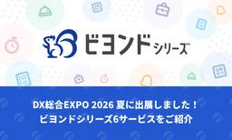

TechRacho
https://techracho.bpsinc.jp
TechRacho（テックラッチョ）は、BPSスタッフがおくるシステム開発＋αのアイデアマガジンです。Ruby on Railsネタ、EPUBの電子書籍ビューワに関連したAndroid/iOS開発ネタが多いです。社内の雰囲気がわかる記事もあるので興味をもってくださる方はぜひご覧ください。
フィード

現代的な Bash 環境を構築する: starship、chezmoi、zoxide + fzf、carapace 2
2
TechRacho
今年MacBook Air M3をクリーンインストールしたのをきっかけに、シェル環境もリフレッシュしました。 きっかけは例によってmizchiさんの以下の記事です。参考にさせていただきました。🙏 環境構築記事、まだまだ更新してるhttps://t.co/h4xbFcDV9e — mizchi (@mizchi) January 10, 2026 大学入学や就職などで初めてノートPCなどを購入したフレッシュマンの皆さんも、この機会にシェル環境を整えてみましょう。 以下をインストールしていきます。 chezmoi: ここでは主にbashのコンフィグファイルの変更検出用 starship: プロンプトのスタ […]The post 現代的な Bash 環境を構築する: starship、chezmoi、zoxide + fzf、carapace first appeared on TechRacho.
1日前
肌かゆい歴ン十年のプログラマが頑張って対策してみた 1
TechRacho
長年アトピーで苦しんでいるプログラマが送る、肌かゆい対策の記事となります。 アトピーの話もありますが、アトピー以外の話の方が多いです。 ちなみに運動不足、睡眠不足、栄養不足、ストレスも肌荒れの原因となりますが、その辺りの話は一切ありませんので安心？してください。 🔗 まえがき 男性プログラマ(または似たような種族)の皆さん、化粧品と聞くと「化粧品(笑)」と思う人が多いのではないでしょうか。 分かります。自分も以前はそうでした。 でも化粧品にはいわゆるメイク用品以外にスキンケア用品も含まれ、この記事の内容はスキンケア中心となります。 しかしスキンケアとかお肌すべすべとか聞くと「スキンケア(笑)」「お肌すべすべ(笑) […]The post 肌かゆい歴ン十年のプログラマが頑張って対策してみた first appeared on TechRacho.
2日前

2026年03月期 BPS概況 1
TechRacho
こんにちは、BPSの渡辺です。今年も「夏のTechRachoフェア2026」やってます。社内メンバーはもちろん、BPSに興味を持ってくださっている方々も楽しんでいただければと思います。 今回も僕が担当するのは、この時期にいつも公開している会社の業績報告です。スーパー優秀な財務担当がくれた資料のスクショとって好きにコメントしているだけですけど。。 会社全体の業績推移 まずは全体の着地からご報告です。直近3年間の中では最も良い着地（過去2番目の好業績）となりました。様々な特需が重なってピークを迎えた4年前（2023年3月期）の最高業績には一歩届きませんでした、が、グラフを見ての通り再びちょっぴり右肩上がりです。はい、 […]The post 2026年03月期 BPS概況 first appeared on TechRacho.
3日前

Raycast: Mac / Windows で使える素直で多機能なランチャー 1
TechRacho
Raycastは便利 Raycastは基本的にアプリケーションランチャーですが、「ホットキーの設定」「スニペット（キーマクロ）」「クリップボード履歴」「簡易電卓」をはじめ多数の機能があります。ぶっちゃけ、MacのSpotlightやサードパーティのAlfredのランチャー機能は、Raycastでまるっとカバーされています。 UI設計も比較的素直で無理が少ないのも好印象です。Mac/Winで使えるのも重要なポイントです。 参考: Raycast - Your shortcut to everything Raycastは有料版もありますが、私は無料版でまったく用が足りています。 遅ればせながら、Raycastはmi […]The post Raycast: Mac / Windows で使える素直で多機能なランチャー first appeared on TechRacho.
4日前

AI Slop 疲れを減らす「仕上げ度」ラベル運用の提案 32
TechRacho
※この文書は[仕上げ度: L2 人間レビュー済み — 作成者による全文確認済み] です。AIのアシストを受けて執筆しましたが、内容については全て作成者による確認済みです morimorihogeです。急に暑くなってきました。溶ける。 業務でフルAI活用しまくるようになって1年以上が経過したということで、AI Slop（見た目は整っているが質の低いAI生成コンテンツの氾濫）と、それに振り回される「AI Slop 疲れ」への対策に関する提案をまとめてみました。 直近みんな困ってる問題だと思いますので、興味のある方はぜひ読んでみてください。 AIに書かせた文書を送られてイラっとしたこと、ありませんか？ こんな経験はない […]The post AI Slop 疲れを減らす「仕上げ度」ラベル運用の提案 first appeared on TechRacho.
5日前

DX総合EXPO 2026 夏に出展しました！ビヨンドシリーズ6サービスをご紹介 1
TechRacho
このたびBPS株式会社は、2026年7月22日（水）～24日（金）に幕張メッセで開催された「DX総合EXPO 2026 夏」へ出展いたしました。 会期中は、多くのお客様に弊社ブースへお立ち寄りいただき、誠にありがとうございました。 今回の展示では、企業・自治体・医療機関・教育機関など、さまざまな現場の業務効率化やDX推進を支援する「ビヨンドシリーズ」6サービスをご紹介しました。 本記事では、展示会の概要と、出展した各サービスについてご紹介いたします。 開催概要 展示会名 DX総合EXPO 2026 夏 東京 開催日時 2026年7月22日（水）～7月24日（金） 10:00～17:00 会場 幕張メッセ 4～7ホ […]The post DX総合EXPO 2026 夏に出展しました！ビヨンドシリーズ6サービスをご紹介 first appeared on TechRacho.
6日前

Rails: Hotwire Native アプリをフルスクリーンモードにする方法: Android編（翻訳）
TechRacho
概要 元サイトの許諾を得て翻訳・公開いたします。 英語記事: How to Enter Full-Screen Mode in Your Hotwire Native App? - Part 1 Android | William Kennedy 原文公開日: 2026年01月05日 原著者: William Kennedy Rails: Hotwire Nativeアプリをフルスクリーンモードにする方法: Android編（翻訳） Hotwire Nativeのアプリや一般的なネイティブアプリでは、デフォルトでアプリ上部にトップバーが表示されますが、より没入感のある体験を実現できるのが望ましいことがあります。 […]The post Rails: Hotwire Native アプリをフルスクリーンモードにする方法: Android編（翻訳） first appeared on TechRacho.
8日前
Railsセキュリティ修正8.1.3.1、8.0.5.1、7.2.3.2がリリースされました
TechRacho
Ruby on Rails セキュリティ修正8.1.3.1、8.0.5.1、7.2.3.2がリリースされました。 Active Storageのアップロード機能とlibvipsが有効で、かつ特定の条件が満たされた場合に影響を受ける可能性のある「重大な」脆弱性（通称: KindaRails2Shell）を修正します。 例として、DebianやUbuntu、およびrails newなどで生成されるDockerfileを用いた環境はデフォルトで影響を受けます。 深刻度「緊急」のRails脆弱性「KindaRails2Shell」（CVE-2026-66066）の概要と対応指針 - GMO Flatt Security […]The post Railsセキュリティ修正8.1.3.1、8.0.5.1、7.2.3.2がリリースされました first appeared on TechRacho.
10日前
Rails: macOSの「ファン表示風」スタックUIをStimulusとTailwind CSSで構築する（翻訳）
TechRacho
概要 元サイトの許諾を得て翻訳・公開いたします。 英語記事: Create a macOS-inspired stack UI with Stimulus and Tailwind CSS | Rails Designer 原文公開日: 2025年08月07日 原著者: Rails Designer -- Railsフロントエンド関連記事に加えて、ViewComponentとTailwind CSSを用いた美しいUIコンポーネントを販売しています なお、デモアプリのカードをクリックすると、以下のように「扇形」に展開します。 Rails: macOSの「ファン表示風」スタックUIをStimulusとTailwind […]The post Rails: macOSの「ファン表示風」スタックUIをStimulusとTailwind CSSで構築する（翻訳） first appeared on TechRacho.
10日前
Railsの鋭い部品シリーズ: クエリ、読み取り専用モデル、バッチクエリ（翻訳）
TechRacho
概要 元サイトの許諾を得て翻訳・公開いたします。 英語記事: Rails: The Sharp Parts. Queries, Read Models, and Batching | baweaver 原文公開日: 2026年06月14日 原著者: Brandon Weaver 日本語タイトルは内容に即したものにしました。 原文のqueryやcommandは、パターンを指す場合にそれぞれ「Query Objectパターン」「Commandパターン」としています。 Railsの鋭い部品シリーズ: クエリ、読み取り専用モデル、バッチクエリ（翻訳） 前回の記事では、ビジネスドメインの振る舞いの置き場所を、従来のコールバ […]The post Railsの鋭い部品シリーズ: クエリ、読み取り専用モデル、バッチクエリ（翻訳） first appeared on TechRacho.
11日前